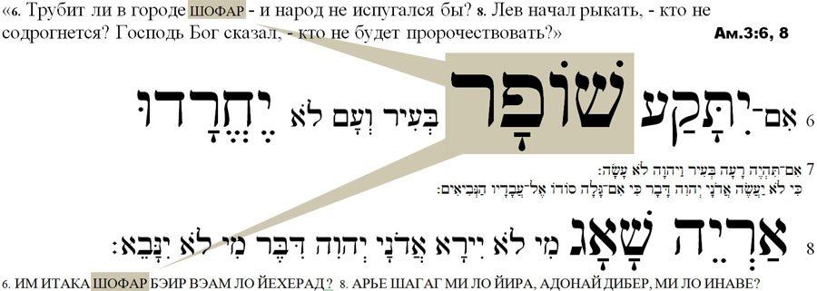
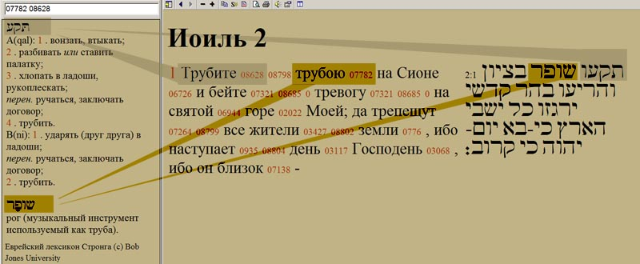

Арт-мидраш · Праздники в Библии
Звуки шофара. ТРЕПЕТ И ПРОРОЧЕСТВО
Что значат для нас эти звуки, какое действие приготовил Творец? Какой реакции Он ожидает от нашего сердца?
Звуки шофара. Трепет и пророчество. Йом Кипур
Автор: Эфраим Калиш
Миновал Праздник Воспоминания о Гласе Шофара (другое его название в Торе - Праздник Трубления Шофара (синод. - Праздник Труб)), но звуки шофара продолжают звучать в синагогах в протяжении всех десяти дней до Йом Кипур. В еврейской традиции эти дни имеют специальное название «ЙОМИМ НОРАИМ» (ивр. – дни трепета), время, предваряющее и связывающее Праздник Воспоминания Гласа Шофара с Праздником Йом Кипур, время, когда можем размышлять, что значат для нас эти звуки, и какое действие приготовил Творец? Какой реакции Он ожидает от нашего сердца?
По Сончино звук шофара ассоциируется с глубокими внутренними переживаниями и непосредственным обращением к самой душе человека.
Пророк Амос очень эмоционально, поэтически образно говорит о том неожиданном действии, которое вызывает шофар.

/
Два совершенно разных действия вызывает шофар:
1. Более точный перевод с иврита слова «испугался» / ХАРАД / - трепетать, содрогаться. Звуки шофара повергают народ в священный трепет. И от Бога исходит всякое дело.
/
2. Пророк соотносит рев шофара с рыканьем льва. И действие его иное: «Господь Бог сказал, - кто не будет пророчествовать?».
Две интересные вещи мы можем видеть здесь: с одной стороны, пророк Амос сравнивает шофар с рыканьем льва, глас шофара вызывает трепет, но с другой стороны, он (глас шофара) вызывает пророческое действие.
Давайте посмотрим на три вида трубления шофара, которые мы слышали на протяжении праздника, и на то основание, которое имеют названия этих видов трубления в Писании.
ТКИА – ПРОНЗАЯ ДО ГЛУБИНЫ
Для размышления о трублении ТКИА, в качестве вступления обратимся к тексту из Н.Завета - Посланию к Евреям /4:12/: «Ибо Слово Божье живо и действенно и острее всякого меча обоюдоострого. Оно проникает до разделения души и духа, составов и мозгов, и судит помышления и намерения сердечные». Слово Божье сравнивается с пронзающим мечом, который способен проникнуть в глубины. Я не случайно избрал именно это место. Автор послания к евреям, думаю, как образ, имел действие шофара.
Итак, мы говорим о первом трублении шофара – ТКИА. Вообще, когда на иврите говорят «трубить в шофар», употребляют именно это слово «литкоа бэшофар».
Если сделать поиск по номерам Стронга, введя одновременно номер 07782 шофара и номер 08628 трубления ТКИА, нами рассматриваемого, получим целый список. Имеет смысл посмотреть все эти случаи - о том, как Иисус Навин разрушает стены Иерихона, там используется вот это слово «ТКИА». Гидеон спасает Израиля, там написано, что он исполняется духа, для того чтобы трубить в шофар. Тоже это слово «ТКИА». «Великая труба вострубит на Сионе», - это уже пророк Исаия. «И возвратит избранных на Сион». Это тоже действие шофара ТКИА.
Здесь я бы хотел посмотреть пророка Иоиля гл. 2:1 
Значение «ТКИА» - вонзать, втыкать. Смысл этого глагола – «проходить насквозь, пронзать». Суть в том, что это не просто нечто проходящее сквозь что-то другое, но это преодоление, как меч преодолевает сопротивление плоти.
«ТАК-У ШОФАР» - о великих опустошениях говорит здесь Господь, о великих бедах и воинах. И вот смысл «ЛИТКОА БЭ-ШОФАР» (трубления в шофар) – то, что требует преодоления, усилий, радикального изменения. В этом же тексте, в 15-й стихе, вновь Бог обращается этими же словами «ТАК-У ШОФАР БА-ЦИОН»:
«15. Вострубите трубою на Сионе, назначьте пост и объявите торжественное собрание». Пост здесь как параллельное действие этому трублению шофара. Пост как преодоление, пост как смирение своей плоти.
И еще одно место я хотел бы посмотреть из пророка Захарии (9:14): «И явится над ними Господь, и как молния вылетит стрела Его, и возгремит Господь Бог трубою, и шествовать будет в бурях полуденных».
Вы уже догадались, здесь, конечно, Бог будет греметь не трубой, а шофаром: «БЭ-ШОФАР ИТКА». Интересно, что здесь трубление шофара самим Богом сравнивается с Его же стрелой, подобной молнии «как молния стрела Его». То есть нечто, что подобно стреле пронзает, подобным будет и гром шофара, которым возгремит Господь.
Что же скажем? ТКИА – значит пронзать насквозь, преодолевая, как Слово Божье , которое проникает до составов и мозгов, до разделения души и духа, и судит намерения и помышления сердечные.
О других видах трубления шофара читайте в следующих постах.